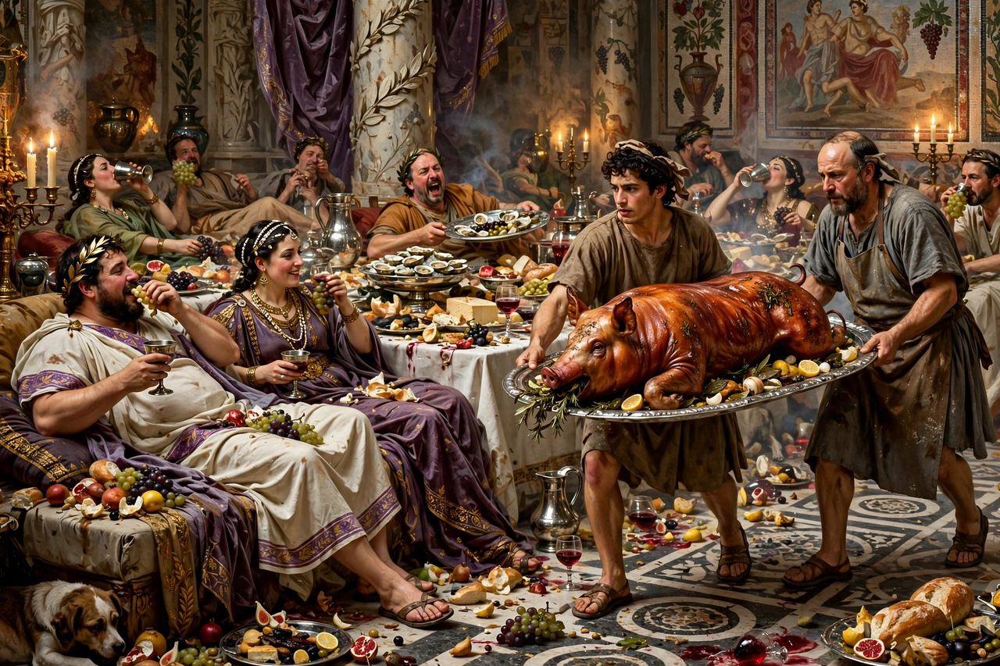

From Wikipedia, the free encyclopedia
| Born | c. AD 27 Massalia (modern Marseille) |
|---|---|
| Died | AD 66 Cumae |
| Occupation | Courtier, novelist |
| Language | Latin |
| Notable works | Satyricon |
Gaius Petronius Arbiter (c. AD 27–66) was a Roman courtier during the reign of Nero and author of the Satyricon, a satirical novel and the most vivid surviving portrait of everyday life in the early Roman Empire. The historian Tacitus describes him as Nero's arbiter elegantiae — "judge of elegance" — whose taste ruled the imperial court.

Trimalchio's dinner party is the centrepiece of the Satyricon.
Petronius was governor of Bithynia and later consul before joining Nero's inner circle. Tacitus portrays a man who slept by day, conducted business and pleasure by night, and achieved fame through cultivated laziness. In AD 66, after the failed Pisonian conspiracy, the praetorian prefect Tigellinus turned Nero against him; Petronius was arrested at Cumae and opened his veins, dying slowly while conversing with friends, listening to light verse, and — pointedly — breaking a valuable fluorspar wine-ladle so the emperor could not have it. He also sent Nero a sealed account of the emperor's debaucheries.
The Satyricon (probably Satyricon libri, "Books of Satyr-like Tales") survives only in fragments, chiefly from books 14–16. It follows the adventures of the narrator Encolpius, his friend Ascyltos and the boy Giton through the brothels, baths and dinner tables of southern Italy. The longest surviving episode is the Cena Trimalchionis, the vulgar, magnificent banquet of the freedman Trimalchio. The work mixes prose and verse (Menippean satire), parodies epic and romance, and preserves the only substantial specimen of colloquial "vulgar" Latin in the freedmen's speeches. Famous inset stories include the Widow of Ephesus and the boy of Pergamon.
The Satyricon has inspired writers from F. Scott Fitzgerald — whose The Great Gatsby echoes Trimalchio's party — to Federico Fellini, whose 1969 film Fellini Satyricon reimagines the fragments.